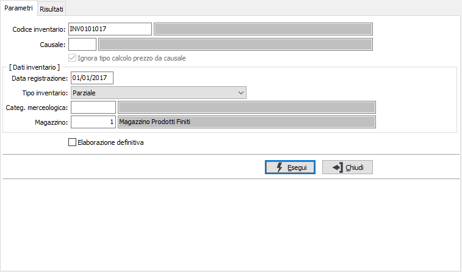
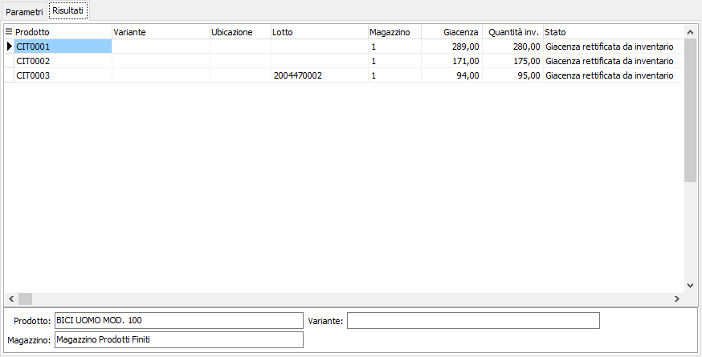

Rilevazione rettifiche
Il programma legge le esistenze finali di ciascun articolo/magazzino e confrontandole con i valori dell'inventario fisico genera automaticamente movimenti di magazzino per l'eventuale differenza riscontrata, utilizzando la causale di magazzino inserita dall’utente.

CODICE INVENTARIO: inserire il codice inventario per cui si vogliono rilevare le rettifiche. Sul campo sono attive le funzioni di ricerca F9 sulla tabella stessa, dei soli inventari che risultano chiusi ma per cui non siano ancora state rilevate le rettifiche.
CAUSALE: inserire la causale di magazzino idonea alla rilevazione delle rettifiche. Sul campo è attiva la ricerca (F9) sulla tabella Causali magazzino.
IGNORA TIPO CALCOLO PREZZO DA CAUSALE: non assegna il prezzo sulle righe del movimento di magazzino anche se sulla causale è previsto un tipo di calcolo del prezzo (casella con segno di spunta); il campo è abilitato se la causale ha attivo il calcolo del prezzo.
ELABORAZIONE DEFINITIVA: check box. Valori ammessi: vuoto = elaborazione di prova; spunta = elaborazione definitiva (vengono generati i movimenti, previa conferma).
Nei "Dati inventario" vengono visualizzati i dati presenti nella codifica dell'inventario selezionato, i dati sono in sola visualizzazione.
Nella pagina dei risultati vengono visualizzati i dati non coerenti, che è possibile stampare utilizzando i tasti della toolbar (anteprima o stampa).
